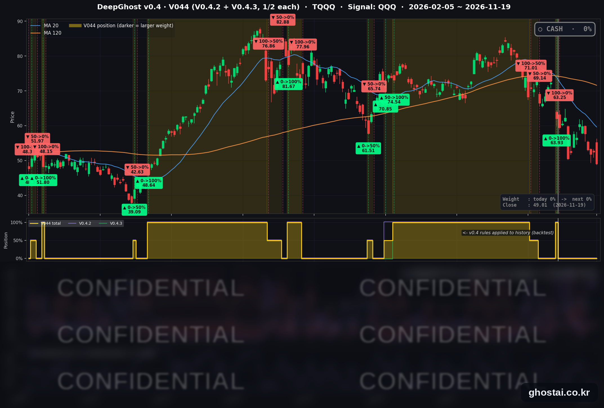

앤트로픽 상장 첫날 나스닥 2.25% 하락 반전, S&P 500 6일 연속 하락
· Ghost.AI 데일리 리포트
👻 매일 시그널과 히스토리를 홈페이지에서 한눈에 → www.ghostai.co.kr
회원 페이지 안내 — 회원 가입 데일리 레포트의 "오늘의 매매 신호"는 26년 12월 31일까지만 제공됩니다. 이후는 회원 페이지(무료) 에서 확인하시기 바랍니다.
앤트로픽 상장 첫날 나스닥은 장중 2.09% 올랐다가 2.25% 내린 23,879.20 으로 마감했습니다. 앤트로픽은 공모가보다 34% 높게 거래를 시작한 뒤 상승 폭을 17.1% 로 줄였고, 그 뒤 반도체와 대형 기술주가 하락으로 돌아섰습니다. S&P 500 은 6거래일 연속 내렸고 구성종목 중 36개만 올랐습니다. 금리는 오히려 내렸고 VIX 는 28.44 로 3월 30일 이후 가장 높습니다. TQQQ 는 6.54% 내렸고, 전략은 현금 보유 중입니다.
📊 오늘의 매매 신호
| 항목 | 내용 |
|---|---|
| 오늘의 신호 | 🟡 신규 신호 없음 — 전략은 현금 보유를 유지합니다 |
| 포지션 상태 | 💵 현금 보유 중 (OUT OF POSITION) |
| 최근 매매 | 10월 19일 $71.01 매도 → 10월 30일 $63.93 매수 · 11월 2일 $63.25 매도(-1.06%) |
| 현금 보유 기간 | 2026-11-02 ~ 2026-11-19 (14거래일, 11월 2일 시가 매도 후) |
| TQQQ 종가 | $49.01(-6.54%) |
TQQQ 시그널 — OUT OF POSITION
현재 상태: 현금 보유 중 | 전략 비중 0% → 다음 거래일 0%

전략은 11월 2일 시가 63.25달러에 TQQQ 를 매도한 뒤 현금 보유 중입니다. 11월 19일에도 새 신호는 나오지 않았습니다.
TQQQ 는 5.28% 높게 출발해 장중 56.19달러(+7.15%)까지 올랐다가 6.54% 내린 49.01달러로 마감했습니다. 장중 고가보다 12.77% 낮은 종가이고, 4월 9일 이후 가장 낮은 종가입니다. 이번 주(11월 13일 종가 대비) 15.03% 내렸고, 6월 2일 최고 종가(87.22달러)보다 43.81% 낮습니다. 11월 2일 매도가보다는 22.51% 낮은 가격입니다.
오늘 미국 시장 — 시황 요약
지수 마감
| 지수 | 종가 | 등락률 |
|---|---|---|
| S&P 500 | 7,175.83 | -2.02% |
| 나스닥 종합 | 23,879.20 | -2.25% |
| 다우존스 | 49,097.06 | -2.19% |
| 러셀 2000 (IWM) | 264.22 | -2.18% |
| QQQ (나스닥100) | 645.04 | -2.19% |
| 반도체 ETF (SOXX) | 137.95 | -2.75% |
| TQQQ | 49.01 | -6.54% |
지수는 모두 높게 출발했다가 장 후반 저점 부근에서 마감했습니다. 나스닥은 고가에서 종가까지 4.34%p 내려 11월 5일 이후 가장 큰 장중 낙폭을 기록했고, 1.5% 넘게 오르며 출발했다가 2% 넘게 내려 마감한 것은 2025년 11월 20일 이후 처음입니다. 종가 기준으로 나스닥은 4월 14일, S&P 500 은 4월 29일, QQQ 는 4월 21일 이후 가장 낮습니다. 다우는 6월 10일 이후 처음 50,000 아래에서 마감했습니다. S&P 500 은 200일선보다 2.34% 낮아 사흘 연속 200일선 아래에 있고, 10월 6일 최고 종가와 비교하면 S&P 500 은 8.22%, 나스닥은 13.48% 낮습니다.
국채 금리 동향
| 만기 | 11/18 | 11/19 | 전일 대비 |
|---|---|---|---|
| 3개월 | 4.145% | 4.147% | +0.2bp |
| 2년 (재무부 기준) | 4.80% | 4.76% | -4bp |
| 5년 | 4.884% | 4.866% | -1.8bp |
| 10년 | 5.066% | 5.052% | -1.4bp |
| 30년 | 5.412% | 5.401% | -1.1bp |
10년물은 장 초반 5.107% 까지 올랐다가 주가가 밀리면서 내려와 나흘 연속 하락했습니다. 주가가 2% 넘게 내린 것에 비하면 채권 시장의 움직임은 크지 않았습니다. 3개월물은 그대로이고 2~5년물이 내려, 가까운 시기 인상은 반영하면서 그 이후 금리 경로 기대는 조금 낮아졌습니다. 10년-3개월 스프레드는 90.5bp, 10년-2년은 28bp 로 역전은 없습니다. 금리가 내린 날 기술·성장주가 가장 많이 내렸으므로, 오늘 하락의 원인은 금리가 아닙니다.
연준 발언 & 금리 패스
- 제퍼슨 부의장 (11월 19일, IMF·브라질 중앙은행 콘퍼런스): AI 도입이 기업 투자를 늘려 지금은 수요와 물가를 끌어올리고 있고, 생산성 향상으로 물가가 내려가는 효과는 앞으로의 일이라고 말했습니다. 기대 인플레이션이 흔들릴 위험이 있으면 물가에 더 강하게 대응해야 한다고 했습니다. 기준금리나 12월 회의는 직접 언급하지 않았지만 다소 매파적인 발언입니다.
- 금리 경로: 기준금리는 3.75~4.00% 입니다. 시장은 12월 25bp 인상 확률을 96.4%(CME FedWatch, 로이터)로 반영하고 있어 인상은 사실상 확정된 상태입니다. 다음 회의는 12월 8~9일입니다.
오늘의 핵심 이슈
- 앤트로픽 상장 첫날, 나스닥은 장중 상승분을 모두 반납했습니다. 앤트로픽(ANT)은 공모가 83달러보다 34% 높은 111.50달러에 첫 거래를 시작해 115달러까지 올랐지만 97.17달러(+17.1%)로 마감했습니다. 첫 거래 뒤 반도체주가 하락으로 돌아섰고, 로이터는 앤트로픽 상장이 AI 주식 투자 심리를 되살리지 못했다고 전했습니다.
- S&P 500 구성종목 493개 중 36개만 올랐습니다. 장중 한때 325개가 전일 종가 위에 있었지만 종가 기준 상승 종목은 올해 들어 가장 적었고, 11개 업종이 모두 내렸습니다. S&P 500 은 이번 주 5.10% 내렸습니다.
- AMD 는 7.72%, 엔비디아는 3.30% 내렸습니다. 탐사보도 매체 헌터브룩 계열 펀드가 AMD 공매도 포지션을 공개한 뒤 AMD 는 장중 +4.69% 에서 -7.72% 로 마감했습니다. 엔비디아는 6거래일 연속 내려 2025년 6월 23일 이후 가장 낮은 종가이고, 대형 기술주 7종목도 모두 내렸습니다.
변동성 & 투자심리
VIX 는 15.80% 오른 28.44 로 마감해 3월 30일 이후 가장 높습니다. 지수가 오른 장 초반에는 22 안팎이었다가 지수가 하락으로 돌아서면서 장중 29.13 까지 올랐습니다. 11월 13일 종가(19.30)보다 47% 높습니다. 공포탐욕 지수는 19(극단적 공포)로 전일 25(공포), 1주 전 40 에서 내려왔습니다(feargreedmeter.com 표시값, 참고용). 뉴욕증권거래소 하락 종목은 상승 종목의 4.37배였고, 나스닥 52주 신저가 종목은 529개였습니다.
매크로 & 원자재
| 품목 | 종가 | 등락률 |
|---|---|---|
| 원유 ETF (USO) | $138.09 | +1.45% |
| WTI 선물 (참고) | $83.16 | -0.12% |
| 금 선물 | $3,627.90 | -3.05% |
| 금 ETF (GLD) | $335.18 | -1.76% |
원유는 전일 3% 넘게 내린 뒤 USO 기준 1.45% 반등했습니다. 금 선물은 3.05% 내려 2025년 9월 4일 이후 가장 낮은 종가입니다. 11월 필라델피아 연은 제조업지수는 6.3 으로 10월(20.9)과 예상치(20 안팎)를 크게 밑돌았고, 신규 주문 지수는 마이너스(-0.4)로 내려갔습니다. 주간 신규 실업수당 청구는 20.3만 건으로 전주보다 1,000건 늘었습니다. 업종별로는 에너지(-1.05%)·유틸리티(-1.14%)가 가장 덜 내렸고 커뮤니케이션 서비스(-2.93%)·경기소비재(-2.77%)가 가장 많이 내렸습니다.
주요 종목 동향
| 종목 | 종가 | 등락률 | 비고 |
|---|---|---|---|
| INTC | 55.72 | +1.92% | 장중 +8.73% |
| QCOM | 162.01 | +1.38% | 장중 +6.86% |
| AAPL | 349.21 | -0.92% | 커버리지 중 하락 폭 가장 작음 |
| MSFT | 498.30 | -1.97% | |
| AVGO | 346.65 | -2.09% | 장중 +4.30% 에서 하락 반전 |
| MU | 690.44 | -2.10% | 장중 +7.76% 에서 하락 반전 |
| NFLX | 58.46 | -2.27% | |
| TSLA | 374.41 | -2.43% | |
| META | 596.22 | -3.27% | |
| NVDA | 145.98 | -3.30% | 6거래일 연속 하락 |
| GOOGL | 272.66 | -3.46% | 앤트로픽 투자사, 시가 +4.20% |
| AMZN | 257.37 | -3.87% | 앤트로픽 투자사, 전일 상승분 반납 |
커버리지 12종목 중 인텔·퀄컴 2종목만 올랐습니다. 12종목 모두 장중 한때 전일 종가보다 높았습니다.
다음 일정 (미 동부시간)
- 11/20(금) 08:25 월러 이사 환영사 / 10:00 11월 미시간대 소비자심리 확정치 / 12:15 쿡 이사 연설 / 월간 옵션 만기
- 11/25(수) 08:30 10월 개인소비지출(PCE)·3분기 GDP 잠정치 / 14:00 베이지북
- 11/26(목) 추수감사절 휴장, 11/27(금) 13:00 조기 폐장
- 12/4(금) 08:30 11월 고용보고서
- 12/8~12/9 FOMC
Ghost.AI — Quantitative AI Investment
Model: DeepGhost v0.4 | Transformer-Based Deep Learning
Coverage: 14 tickers | Updated every trading day after US market close
⚠️ 본 자료는 정보 제공 목적으로만 작성되었으며 투자 권유가 아닙니다. 모든 투자의 책임은 투자자 본인에게 있습니다. 과거 성과가 미래 수익을 보장하지 않습니다.
[유의사항]
- 본 서비스는 불특정 다수를 대상으로 발행되는 단방향 정보 제공 서비스이며, 투자자 개인의 재산 상황·투자 목적·위험 선호도를 반영한 개별 투자 조언이 아닙니다.
- 고스트에이아이 주식회사는 고객과 쌍방향 의사소통(개별 상담, 맞춤형 자문 등)을 제공하지 않습니다.
- 본 콘텐츠는 투자 권유 또는 매매 주문의 청약·청약의 권유에 해당하지 않으며, 최종 투자 판단 및 그에 따른 손익의 책임은 전적으로 투자자 본인에게 있습니다.
고스트에이아이 주식회사